What changed between two 170-page provider manuals?
Northstar Provider Operations is a fictional clinic operations team. Its staff must find what changed between the 2025 and 2026 editions of a health plan's public Marketplace provider manual: 343 pages in total. A stale fax number delays prior authorization. A rule that only looks new causes needless process changes. So every answer has to be short, cited to an edition and page, checked by code, and approved by a person.
Ask
“What changed in pharmacy routing for 2026?”
Retrieve
Page-level chunks from both editions, with dated addenda
Generate
Structured JSON answer under 50 words, every claim cited
Verify
The cited page must exist and contain the fact
Approve
An ops lead decides whether to change a procedure
The NVIDIA arc. Step 3 started as Foundry-hosted Nemotron, paid per token. It now also runs as NIM on an AKS A100. Next comes a controlled comparison of NIM, vLLM and TensorRT-LLM on the same checkpoint. Steps 1, 2, 4 and 5 stay fixed so the comparison measures only the serving change.
The five golden checks are traps: a real routing change, a new outside vendor, a new restriction layered on an older rule, an ID that did not change, and a 2025 addendum rule that looks new in 2026. Expected answers are written independently and never shown to the model.
Where the build stands
The same application is engineered forward. A gate passes only on executed evidence, never on a config file or a healthy pod.
Cited research agent
- Python + Azure AI Search + hosted Nemotron
- 5/5 live golden checks, 18 unit tests
- OpenTelemetry traces in Foundry
AI-Q blueprint integration
- NVIDIA AI-Q 2.2.1 running on AKS
- Entra-only auth through a token-proxy sidecar
- NVIDIA embeddings (2048-d) with the key in Key Vault
Next: MCP retrieval, NeMo Guardrails, AIPerf streaming TTFT/ITL, MLflow, 20 reviewed cases
NIM on an A100
- A100 80 GB Spot pool, tainted and isolated
- NIM serving with observed GPU activity
- Workload identity, private registry, CSI secrets
Next: NIM Operator (NIMCache + NIMService), Helm chart, golden checks through the GPU path
Engines and profiling
- trtllm-serve, Triton + TensorRT-LLM, vLLM vs NIM
- AIPerf sweeps, DCGM, Nsight Systems
- A small CUDA kernel with a CPU reference
Boundaries that hold
- NeMo Guardrails at deployed boundaries
- 401/403 and cross-team isolation tests
- Bounded work and failure drills
Repeatable delivery
- Terraform, Helm, GitHub Actions, Argo CD
- MLflow-linked quality and performance gates
- A timed, real rollback
What one A100 taught me
From the NIM smoke test on an AKS Spot node (A100 80 GB PCIe, driver 580, CUDA 13.0). These are smoke-test observations, not a benchmark.
About 3B parameters active per token. It computes like a small model but needs the memory of a 30B one.
The selected profile was vllm-int4-tp1-pp1. A NIM-vs-vLLM test would mostly measure packaging.
Ampere has no native FP8/FP4 tensor cores, so low-precision weights are dequantized inside the kernel.
Mostly KV cache that vLLM pre-allocates. High VRAM use doesn't tell you the model size.
nvidia-smi “util” is time-based. DCGM SM activity and Nsight show real saturation.
Non-streaming, with thinking off. It isn't TTFT; that needs a streaming path and AIPerf.
Plus a 10.8 GB image pull and a ~21 GB model cache. A NIMCache on a PVC is the restart fix.
The NGC key goes Key Vault → private endpoint → CSI. The app uses workload identity for Foundry and Search.
Lessons I'd bring to a customer POC
Agent fan-out is a capacity problem
One AI-Q deep report made 49 model calls plus 20 throttled retries. Hosted TPM limits count each request's max_tokens, so a shared deployment collapsed under one report.
Changed: a dedicated deployment sized for the whole workflow, and a per-report call budget that the runtime has to respect.
A blueprint isn't proof of correctness
The AI-Q report was well written but missed the pharmacy routing change. The plain keyword baseline got it right. The source list also collapsed to one page per file.
Changed: independent golden answers gate every variant. The blueprint stays a comparison path until it passes them.
Fit the blueprint to the customer's identity model
AI-Q's model provider accepts only a static API key, and the environment forbids keys.
Changed: a loopback-only sidecar swaps in a refreshed Entra token from workload identity. It has 7 tests covering refresh, streaming and 401 handling.
Reasoning tokens are real tokens
Hidden reasoning used all 8,192 output tokens and the structured answer failed with length.
Changed: thinking is off for strict-JSON tasks, and an empty or truncated answer is always a failure, never a success.
Ask which engine is under the package
NIM chose a vLLM INT4 profile on Ampere, not TensorRT-LLM.
Changed: engine comparisons hold weights, tokenizer, GPU and prompts constant, use ABBA ordering and ≥3 repetitions, and put a quality gate before any speed claim.
Quota isn't capacity
The region had no free Search capacity, a database SKU wasn't available, and Spot GPUs can be evicted.
Changed: check physical allocation at run time, scale the GPU pool to zero after every session, and never call one Spot GPU high availability.
How I translate what customers already run
Most enterprise customers start from a cloud-managed AI service. The conversation is about what they gain by self-hosting on NVIDIA (latency, cost per token, data control) and what they take on (sizing, patching, uptime).
| Azure concept | NVIDIA building block | The difference that matters | Gate |
|---|---|---|---|
| Foundry model deployment | NIM | You choose the GPU, the profile and the uptime. Check which engine profile NIM selected. | G1→G3 |
| TPM / PTU capacity | GPU sizing | VRAM = weights + KV cache. KV cache limits concurrency; tokens/s per GPU sets cost. | G2·G3 |
| AKS GPU node pool | GPU Operator | Driver, toolkit, device plugin, DCGM, MIG manager. Run one GPU manager, not two. | G3 |
| (no equivalent) | NIM Operator | NIMCache and NIMService manage the model and its cache, not the GPU. | G3 |
| Azure ML online endpoint | Triton Inference Server | The serving layer: dynamic batching, ensembles, metrics. Hosts the TensorRT-LLM backend. | G4 |
| ONNX Runtime / Olive | TensorRT-LLM | The engine: in-flight batching, paged KV, FP8/FP4 where the GPU supports it. | G4 |
| APIM AI gateway | Dynamo · Switchyard | KV-aware routing and disaggregated prefill/decode across engine workers; model escalation. | G4 |
| Content Safety | NeMo Guardrails | Programmable input, retrieval and output rails. Not a substitute for access control. | G2·G5 |
| Azure AI Search | NeMo Retriever NIMs | Embedding and rerank NIMs. Here they feed an Azure AI Search index. | G2 |
| Foundry Agent Service | AI-Q + NeMo Agent Toolkit | Blueprints accelerate the start. Budgets, identity and evals make them production-shaped. | G2 |
| Foundry evals + App Insights | AIPerf · DCGM · Nsight | Keep endpoint speed and answer quality as separate measurements. | G2·G4 |
| NC A100 v4 · ND H100 v5 | Ampere · Hopper · Blackwell | Precision support follows the generation: FP8 arrives with Hopper, FP4 with Blackwell. | G3 |
The inference stack, bottom to top
NIM is packaging, Triton is serving, TensorRT-LLM is the engine and CUDA is the runtime. When a customer says “we run NIM,” my first question is which profile and which engine.
Sizing a deployment before buying GPUs
E2E ≈ TTFT + (output tokens − 1) × ITLPrefill is compute-bound and drives TTFT. Decode is memory-bandwidth-bound and drives ITL.KV/token = 2 × layers × kv_heads × head_dim × bytesMultiply by concurrent sequences × context length. This, not the weights, usually limits concurrency.decode tok/s ≲ memory bandwidth ÷ weight bytesAt ~2 TB/s and 16 GB of weights, the batch-1 ceiling is about 120 tok/s. That's why quantization speeds up decode.in-flight = arrival rate × latencyLittle's Law: 10 req/s × 4 s = 40 concurrent sequences to hold in KV cache.$/1M tok = GPU-hrs × $/GPU-hr ÷ (out tok / 1M)GPU-only cost, compared at matched quality and matched P95 latency target.Worked example · Llama-3.1-8B, FP16
Fits an 80 GB A100 or H100 with headroom. On a 48 GB L40S, cut concurrency or context, or move weights and KV cache to FP8.
Principles behind every gate
Evidence over claims
A status changes only with a test, trace or measured run. Unrun steps stay marked as planned.
Quality before speed
A faster engine that fails a golden check isn't a win. Quality gates sit in front of every benchmark.
One variable at a time
Same weights, tokenizer, prompts and GPU across serving lanes. Differences in precision or template get labeled.
No keys
Entra workload identity and Key Vault references throughout. Nothing secret in YAML, logs or source.
People decide
The agent drafts cited findings. A person approves any operational change.
Cost is a design input
Lowest viable SKU, Spot for bounded lab runs, and a scale-to-zero step after every session.
Field notes and architecture diagrams
Full-resolution images. Diagrams marked “target” are designs for later gates, not deployed systems.

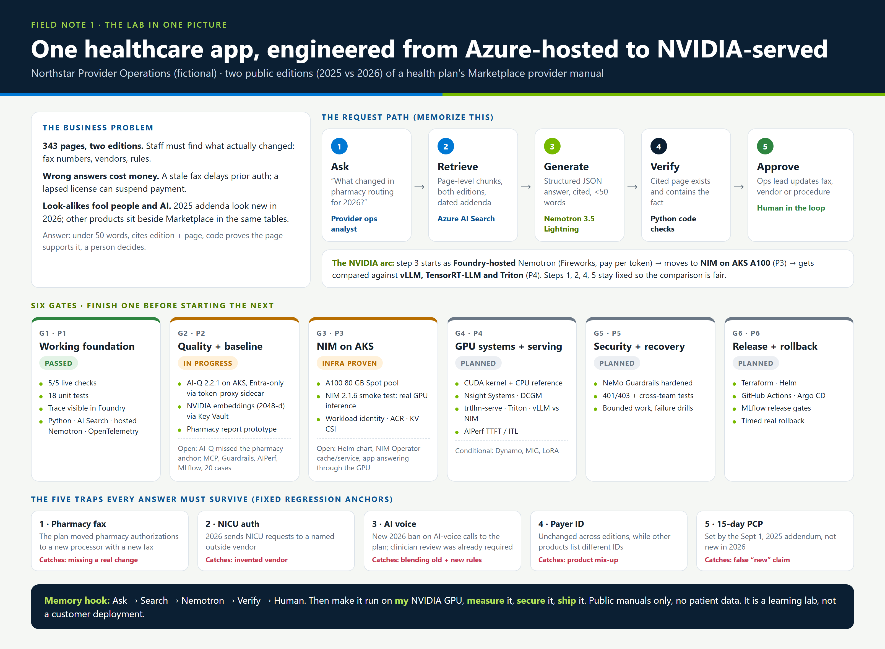
The lab on one page
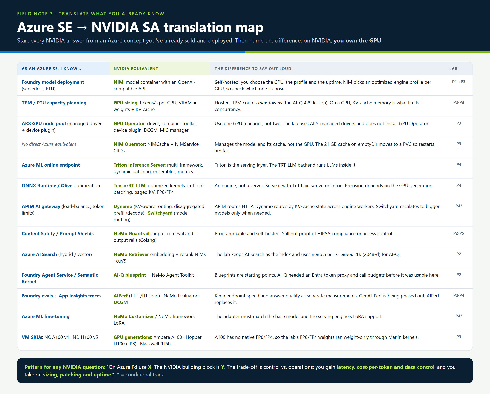
Azure → NVIDIA translation map
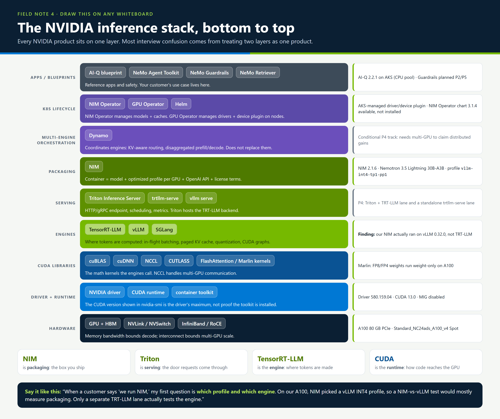
NVIDIA inference stack
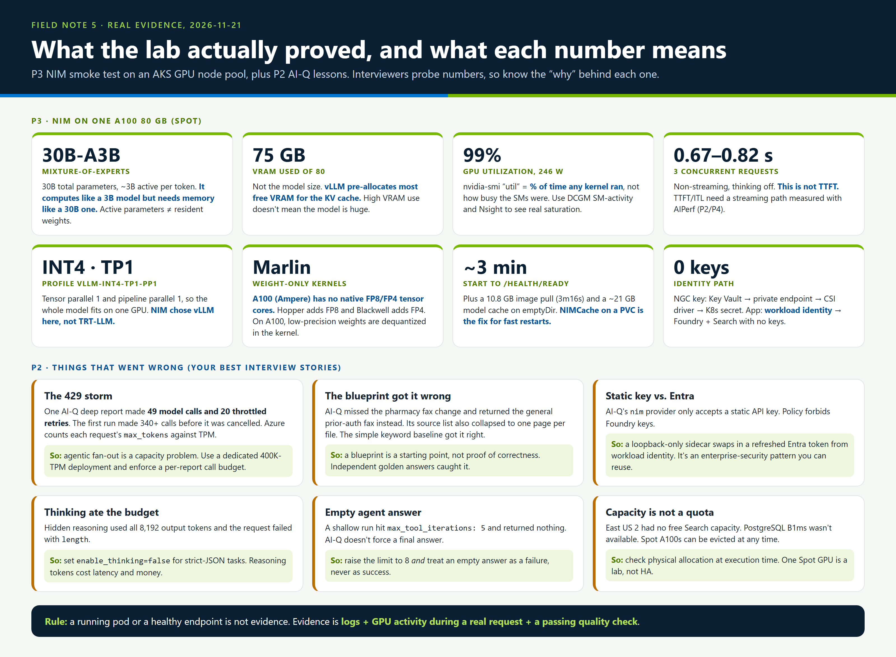
A100 evidence and lessons
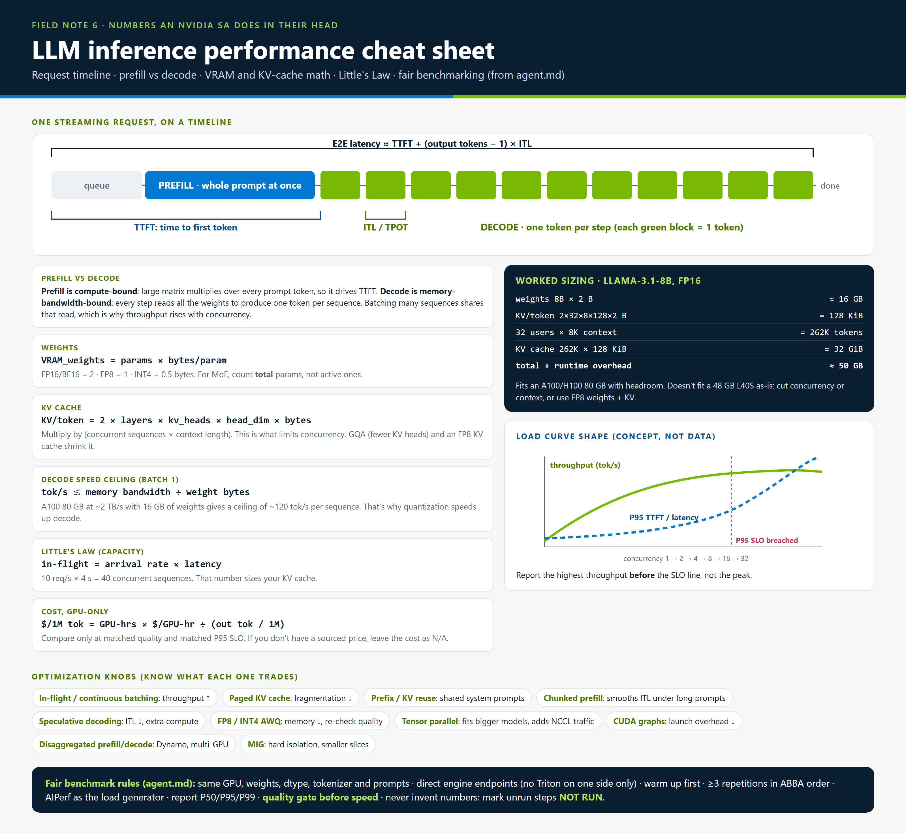
Inference performance cheat sheet
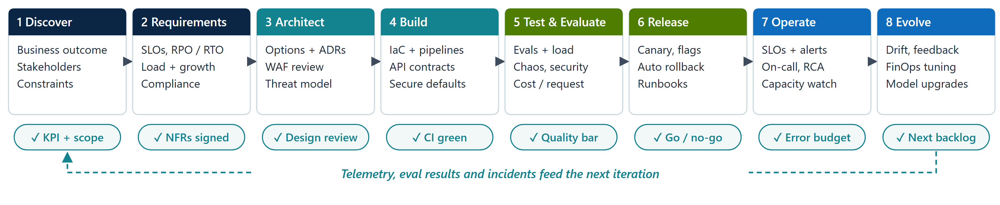
SDLC: eight phases, eight gates
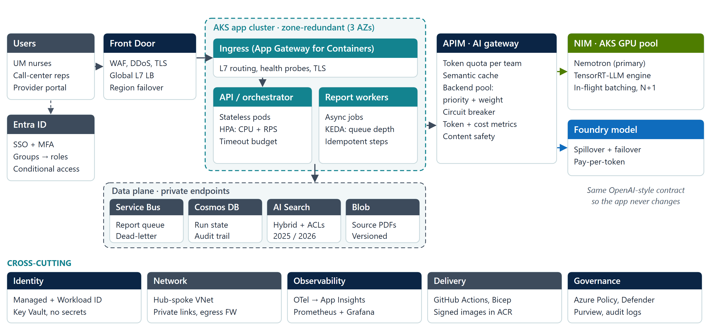
Target reference architecture
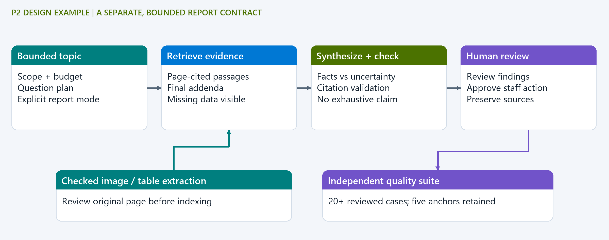
G2: bounded report contract
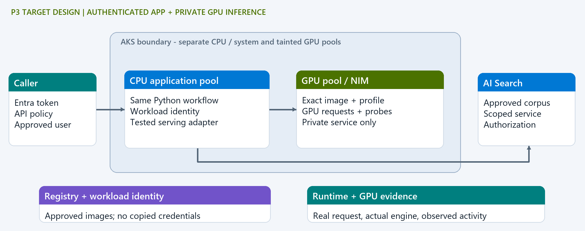
G3: private GPU inference on AKS
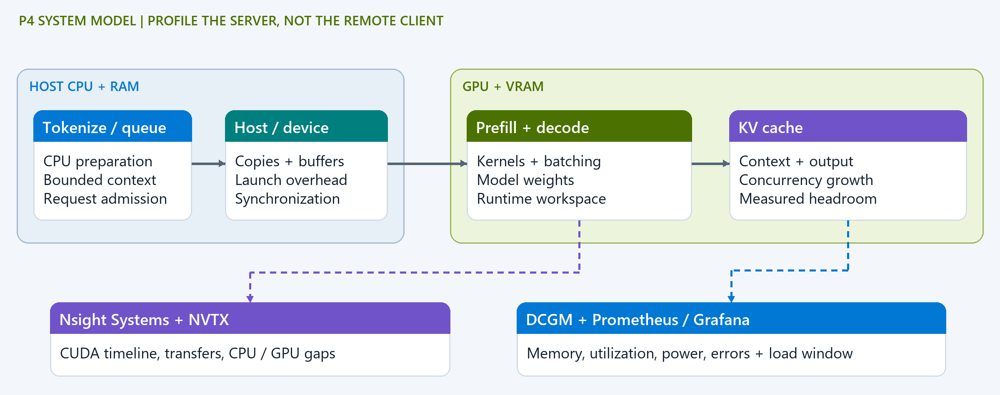
G4: GPU system model
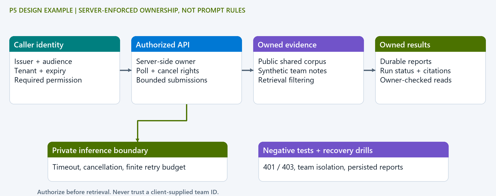
G5: ownership boundary (target)
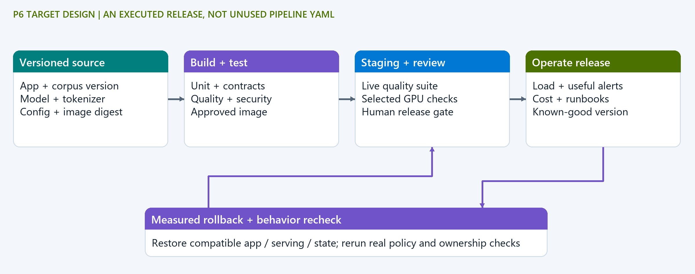
G6: gated release (target)
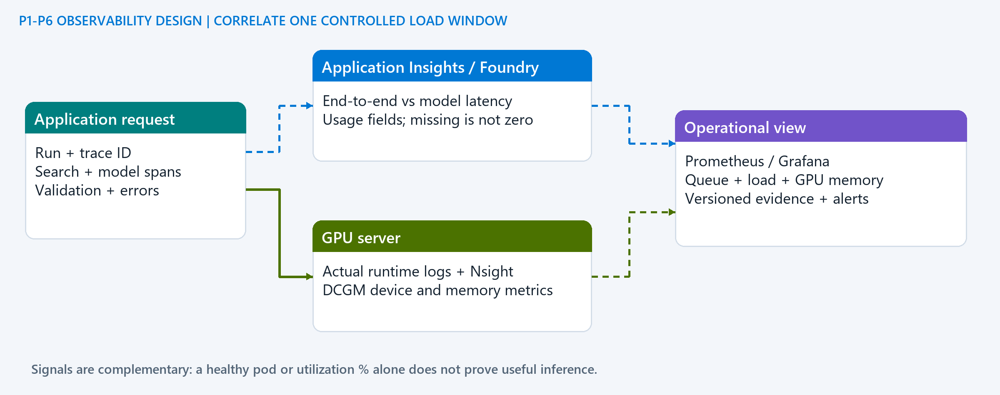
Observability design
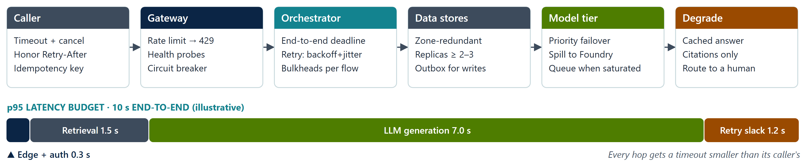
Resilience path and latency budget
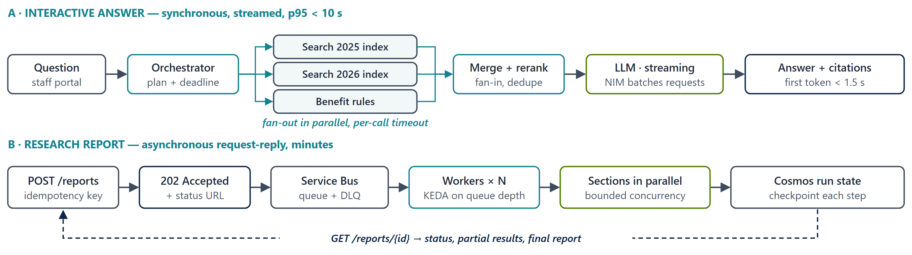
Parallel answers, async reportsOther NVIDIA lab guides I built
Hands-on lab guides with fictional customers and synthetic data. Each README lists its own modules and checks.
Multi-tenant inference on AKS
MIG partitioning, NIM Operator, Dynamo KV-aware routing, AIPerf and a performance gate for a payer-provider.
lfy-secure-agent-labSecure agentic AI
A SOC analyst agent that resists prompt injection and never leaks PHI, with measured safety cost.
plv-multicloud-nim-labOne NIM product on every cloud
AKS and GKE with GitOps, per-cloud AIPerf price-performance, LoRA MLOps and an air-gapped design.
ttg-agentic-genai-labAgentic AI, quantified
A travel-disruption agent with MCP tools, a scored golden set and an engine bake-off for agent traffic.